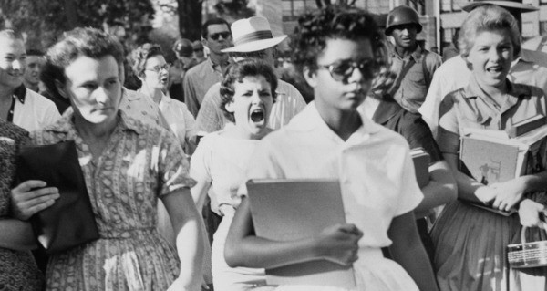

Axe 1 : Identities and exchanges
Axe 2: Private and public spaces
Axe 3: Citizenship and virtual worlds
Axe 4: Art and power
Key Question:
Can artists be Civil disobedience leaders?
Banksy has used art to criticise consumer society
Guernica
Land of the free by the killers
Norman Rockwell “The problem we all live with”
George Orwell (1984/Animal farm)
Jim Carlos (segregation laws)
Mississippi Burning
The Green Book
Jungle
Keith Herring
Doc 1: Boy Over the Mexican Border
→ Denunciation of a wall → Art as a protest tool → Temporary Art : eventful :
more striking than a long-lasting monument
more promotion
→ A child
Innocence
Curiosity
_____ Adult decisions are harmful to these children.
Future
Doc 2: Dismaland
Power of art is to raise awareness to causes (caricature)soothe
Doc 3: Small bio of Banksy
Name : unknown
Age : Around 50 years old
Place of residence : England
Work : Street artist, political activist, film director since the 1990s
About his art : satircal, contradicory mixes of dark an light tints, including dark humor and grafities made with a single stenciling technique.
Political and social works : featured on street walls and bridges all over the world.
Most known art :
Napalm (2004)
The $60 pop-up sale in New York City (2013)
Dismaland (2015)
Love is in the Air (Flower Thrower) (2003)
Basquiat being “stopped-and-frisked” outside the Barbican Centre (2017)
Love is in the Bin (2019) (shredded girl and the balloon)
About Dismaland:
What it is: A temporary exhibition prepared in secret
Organised by whom? Bansky and other artists
Where: Weston-Super-Mare (Somerset)
What is its aim: Show the dystopian side of Disneyland?
When did it open?: 21 August 2015
When dd it close?: 27 September 2015 (36 days later)
How was it described by Bansky: "family theme park unsuitable for children."
Where did the idea come from: "bemusement park" was potentially inspired by aesthetic of "Dismayland"
Doc 4: Audio report
Key question n°2:
Can photojournalism change the course of history?
Doc 5: The power of photography: Photojournalism
The link to the video: https://www.ted.com/talks/james_nachtwey_my_wish_let_my_photographs_bear_witness
Power of photography → inform and denounce
Angle of the photography may change the message
Long-lasting effect (does not disappear)
Gets people involved, raises awareness
Photography tells one truth:
∟ Depending on the angle, the story may be different ∟ Photojournalists have opinions and as such, intentions.
Long-lasting effect (does not disappear)
Gets people involved, raises awareness.
Doc 6: elizabeth ekford and hazel bryan

Taking of the picture: Sept 4th, 1957
Type: Segregation
Segregation laws: Jim Crows Laws
Start and end of segregation: (1870-1965)
Place where segregation takes place: Arkansas (South)
Slave on cotton/tobacco/sugar plantation
Key Dates:
1964: Civil Rights Act
1965: Voting Rights Act
When the image was taken, Hazel Bryan as taking saying the A of the word Africa from the sentence « Go back to Africa »
There where Arkansas national guards in the crowd on the integration day
President Eisenhower saw the photo a few days after it was taken, he is a republican.
When Eisenhower saw the photo, he thought about one thing: 1954: Braown v. Board of Education. He mainly thought that something was wrong
The president is now in control of the national guard.
He sent the us army to protect and let the black kids enter school.
Doc 7: 1972 Olympics Black Power salute
Bare feet → poverty
Fist in the air → power
Black Scarf → hanging
∟ Strange Fruit
Illegal protest → Olympic Games are apolitical
OG → Celebrate diversity/inclusion
Sport
→ art (martial art)
→ Values (forges identity)
→ mixing/exchanges of culture (diversity and inclusion)
∟ Invictus
Doc 8: English Research for orals
Aside: (unplaceable/difficult to place):
Cancel Culture: art can be so powerfull, some people dislike its message !
The Mexican Border:
A picture of a boy peering over the border.
Axe 5: Fictions an realities/fact
American Dream and immigration
Doc 9: 026 (AD (American Dream))
Doc 10: Image of immigrants arriving on boat seeing the statue of liberty.
Key questions:
Is fictions dealing with reality?
Doc 11: The new colossus:
Hear it read:
VIDEO
Taken from youtube: https://youtu.be/NaKUuk78L1A
Summary/definition of the AD (in the text): last sentence! The American Dream is the idea that in America you can be anyone, can be successful, you can MAKE IT!
© Created By Henry Letellier